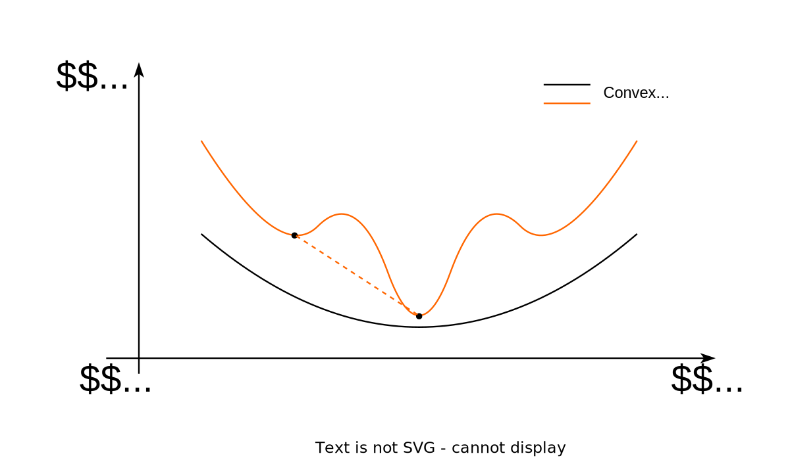

1 Convexity definitions
1.1 Jensen’s inequality
The function f(x), which is defined on the convex set S \subseteq \mathbb{R}^n, is called convex on S, if:
f(\lambda x_1 + (1 - \lambda)x_2) \le \lambda f(x_1) + (1 - \lambda)f(x_2)
for any x_1, x_2 \in S and 0 \le \lambda \le 1.
If the above inequality holds as strict inequality x_1 \neq x_2 and 0 < \lambda < 1, then the function is called strictly convex on S.

1.2 Epigraph
For the function f(x), defined on S \subseteq \mathbb{R}^n, the following set:
\text{epi } f = \left\{[x,\mu] \in S \times \mathbb{R}: f(x) \le \mu\right\}
is called epigraph of the function f(x).
1.3 Sublevel set
For the function f(x), defined on S \subseteq \mathbb{R}^n, the following set:
\mathcal{L}_\beta = \left\{ x\in S : f(x) \le \beta\right\}
is called sublevel set or Lebesgue set of the function f(x).
2 Criteria of convexity
2.1 First-order differential criterion of convexity
The differentiable function f(x) defined on the convex set S \subseteq \mathbb{R}^n is convex if and only if \forall x,y \in S:
f(y) \ge f(x) + \nabla f^T(x)(y-x)
Let y = x + \Delta x, then the criterion will become more tractable:
f(x + \Delta x) \ge f(x) + \nabla f^T(x)\Delta x
2.2 Second-order differential criterion of convexity
Twice differentiable function f(x) defined on the convex set S \subseteq \mathbb{R}^n is convex if and only if \forall x \in \mathbf{int}(S) \neq \emptyset:
\nabla^2 f(x) \succeq 0
In other words, \forall y \in \mathbb{R}^n:
\langle y, \nabla^2f(x)y\rangle \geq 0
2.3 Connection with epigraph
The function is convex if and only if its epigraph is a convex set.
2.4 Connection with sublevel set
If f(x) - is a convex function defined on the convex set S \subseteq \mathbb{R}^n, then for any \beta sublevel set \mathcal{L}_\beta is convex.
The function f(x) defined on the convex set S \subseteq \mathbb{R}^n is closed if and only if for any \beta sublevel set \mathcal{L}_\beta is closed.
2.5 Reduction to a line
f: S \to \mathbb{R} is convex if and only if S is a convex set and the function g(t) = f(x + tv) defined on \left\{ t \mid x + tv \in S \right\} is convex for any x \in S, v \in \mathbb{R}^n, which allows checking convexity of the scalar function to establish convexity of the vector function.
3 Strong convexity
f(x), defined on the convex set S \subseteq \mathbb{R}^n, is called \mu-strongly convex (strongly convex) on S, if:
f(\lambda x_1 + (1 - \lambda)x_2) \le \lambda f(x_1) + (1 - \lambda)f(x_2) - \frac{\mu{2}} \lambda (1 - \lambda)\|x_1 - x_2\|^2
for any x_1, x_2 \in S and 0 \le \lambda \le 1 for some \mu > 0.
3.1 Criteria of strong convexity
3.1.1 First-order differential criterion of strong convexity
Differentiable f(x) defined on the convex set S \subseteq \mathbb{R}^n is \mu-strongly convex if and only if \forall x,y \in S:
f(y) \ge f(x) + \nabla f^T(x)(y-x) + \dfrac{\mu}{2}\|y-x\|^2
Let y = x + \Delta x, then the criterion will become more tractable:
f(x + \Delta x) \ge f(x) + \nabla f^T(x)\Delta x + \dfrac{\mu}{2}\|\Delta x\|^2
3.1.2 Second-order differential criterion of strong convexity
Twice differentiable function f(x) defined on the convex set S \subseteq \mathbb{R}^n is called \mu-strongly convex if and only if \forall x \in \mathbf{int}(S) \neq \emptyset:
\nabla^2 f(x) \succeq \mu I
In other words:
\langle y, \nabla^2f(x)y\rangle \geq \mu \|y\|^2
4 Facts
f(x) is called (strictly) concave, if the function -f(x) - is (strictly) convex.
Jensen’s inequality for the convex functions:
f \left( \sum\limits_{i=1}^n \alpha_i x_i \right) \leq \sum\limits_{i=1}^n \alpha_i f(x_i)
for \alpha_i \geq 0; \quad \sum\limits_{i=1}^n \alpha_i = 1 (probability simplex)
For the infinite dimension case:f \left( \int\limits_{S} x p(x)dx \right) \leq \int\limits_{S} f(x)p(x)dx
If the integrals exist and p(x) \geq 0, \quad \int\limits_{S} p(x)dx = 1.
If the function f(x) and the set S are convex, then any local minimum x^* = \text{arg}\min\limits_{x \in S} f(x) will be the global one. Strong convexity guarantees the uniqueness of the solution.
Let f(x) - be a convex function on a convex set S \subseteq \mathbb{R}^n. Then f(x) is continuous \forall x \in \textbf{ri}(S).
5 Operations that preserve convexity
- Non-negative sum of the convex functions: \alpha f(x) + \beta g(x), (\alpha \geq 0 , \beta \geq 0).
- Composition with affine function f(Ax + b) is convex, if f(x) is convex.
- Pointwise maximum (supremum) of any number of functions: If f_1(x), \ldots, f_m(x) are convex, then f(x) = \max \{f_1(x), \ldots, f_m(x)\} is convex.
- If f(x,y) is convex on x for any y \in Y: g(x) = \underset{y \in Y}{\operatorname{sup}}f(x,y) is convex.
- If f(x) is convex on S, then g(x,t) = t f(x/t) - is convex with x/t \in S, t > 0.
- Let f_1: S_1 \to \mathbb{R} and f_2: S_2 \to \mathbb{R}, where \operatorname{range}(f_1) \subseteq S_2. If f_1 and f_2 are convex, and f_2 is increasing, then f_2 \circ f_1 is convex on S_1.
6 Other forms of convexity
- Log-convex: \log f is convex; Log convexity implies convexity.
- Log-concavity: \log f concave; not closed under addition!
- Exponentially convex: [f(x_i + x_j )] \succeq 0, for x_1, \ldots , x_n
- Operator convex: f(\lambda X + (1 − \lambda )Y ) \preceq \lambda f(X) + (1 − \lambda )f(Y)
- Quasiconvex: f(\lambda x + (1 − \lambda) y) \leq \max \{f(x), f(y)\}
- Pseudoconvex: \langle \nabla f(y), x − y \rangle \geq 0 \longrightarrow f(x) \geq f(y)
- Discrete convexity: f : \mathbb{Z}^n \to \mathbb{Z}; “convexity + matroid theory.”
7 References
- Steven Boyd lectures
- Suvrit Sra lectures
- Martin Jaggi lectures
- Example of Pl non-convex function Open in Colab